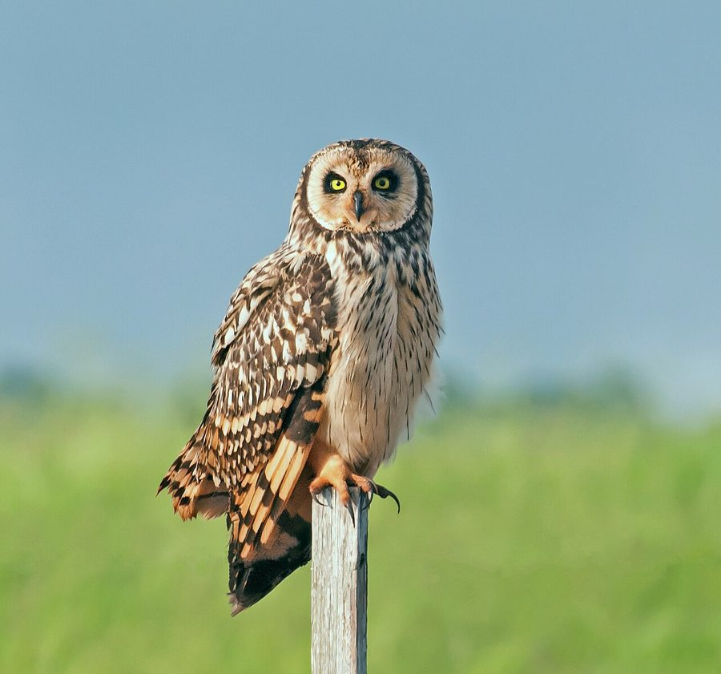

अल्प-कर्ण उल्लूShort-eared Owl
Asio flammeus · Strigidae · BRD-0053

- Scientific name
- Asio flammeus (Pontoppidan, 1763)
- Family
- Strigidae
- Hindi
- अल्प-कर्ण उल्लू
- Status here
- native
- IUCN
- LC
When to look कब देखें
Expected mainly in November, December, January, February, March.
अल्प-कर्ण उल्लू / Short-eared Owl
Asio flammeus (Pontoppidan, 1763) — Strigidae
अल्प-कर्ण उल्लू (शॉर्ट-इअर्ड आउल) — पूर्वी उत्तर प्रदेश के खुले घास के मैदानों, कटाई के बाद छोड़े गए धान के खेतों (paddy stubble) और नदी के कछारों (floodplains) में पाया जाने वाला एक मध्यम आकार का शीतकालीन प्रवासी उल्लू है। अधिकांश अन्य उल्लुओं के विपरीत, यह दिन के उजाले और गोधूलि वेला (diurnal and crepuscular) में सक्रिय होकर शिकार करता है। इसकी सबसे बड़ी पहचान इसकी पीली चमकीली आँखें जो एक काले रंग के छल्ले से घिरी होती हैं (bright yellow eyes set in a black-rimmed facial disc), धारीदार पीला-भूरा शरीर, और इसके सिर पर मौजूद बहुत छोटे कान जैसे पंख (short ears/feather tufts) हैं, जो आमतौर पर दिखाई नहीं देते। यह हवा में तैरते हुए (buoyant gliding flight) मैदानों के ऊपर उड़ता है और चूहों तथा बड़े कीड़ों का शिकार करता है। यह घास के मैदानों के नष्ट होने के कारण वैश्विक रूप से घट रहा है, जिसके कारण इसका संरक्षण बहुत महत्वपूर्ण है।
Quick Identification त्वरित पहचान
| Feature | Description |
|---|---|
| Size | Medium-sized owl (34–40 cm total length); wingspan is around 95–110 cm |
| Eyes | Bright, piercing yellow eyes set within a blackish-rimmed whitish facial disc |
| Ear Tufts | Extremely short, tiny feather tufts situated near the center of the forehead, rarely visible |
| Flight | Distinctive buoyant, hawk-like flight with slow wingbeats; glides and quarters low over grass |
| Colouration | Pale tawny-buff upperparts boldly streaked with dark brown; pale underparts with narrow streaks |
| Roosting | Rests during the day directly on the ground, concealed in tall grass or crop stubble |
Field tip: Look for them in open grasslands or harvested paddy fields at dusk during winter. Watch for a medium-sized owl flying low and buoyantly over the ground, flapping its long wings like a harrier. The female is larger than the male and is shown in the field tip.
Morphology आकारिकी
Biometrics (typical measurements in the northern Indian plains showing reverse sexual size dimorphism):
| Measurement | Range |
|---|---|
| Total length (Male) | 340–370 mm |
| Total length (Female) | 360–400 mm |
| Wingspan (Male) | 950–1050 mm |
| Wingspan (Female) | 980–1100 mm |
| Wing (Male) | 295–320 mm |
| Wing (Female) | 305–330 mm |
| Tail (Male) | 130–145 mm |
| Tail (Female) | 135–150 mm |
| Tarsus (Male) | 38–43 mm |
| Tarsus (Female) | 40–45 mm |
| Bill (Male) | 26–29 mm |
| Bill (Female) | 27–30 mm |
| Weight (Male) | 250–350 g |
| Weight (Female) | 280–450 g |
Plumage: The upperparts are ochre-yellow or pale buff, heavily streaked with dark brown. The facial disc is round, whitish-buff, framed by a dark brown ruff, with a dark area surrounding each eye. The ear tufts are very small, comprising only a few short feathers near the middle of the forehead. The breast is heavily streaked with dark brown, while the belly is paler with fine, sparse streaks. The underwing shows a clean buff-white cover with a distinct dark comma-shaped mark at the wrist.
Bare parts: The hooked bill is black. The irises are bright golden-yellow. The legs and toes are fully feathered to the claws with buffy-white feathers. The claws are long, curved, and black.
Vocalisations
Generally quiet during their winter stay in northern India.
- Territorial call: A low, breathy, repeated hoot: voo-voo-voo-voo-voo, repeated 10–12 times, mainly produced by males on breeding grounds.
- Alarm call: A sharp, barking, nasal yip: tyap-tyap-tyap or keaw-keaw, uttered when flushed from its roosting site by humans or harassed by crows.
Behaviour & Ecology व्यवहार और पारिस्थितिकी
- Hunting style: Quarters slowly over open country, flying at heights of 1 to 3 metres, searching for rodents by sound and sight. Once located, it drops rapidly onto the ground to pin the prey. It is primarily crepuscular (active at dusk and dawn) but will hunt on overcast days.
- Ground roosting: Unlike most owls that roost in trees, the Short-eared Owl roosts on the ground, hiding in tall grass, sugarcane fields, or paddy stubble, relying on its mottled plumage for camouflage.
- Flight silhouette: Displays long, narrow wings with slow, deliberate flaps, giving it a light, buoyant, moth-like flight appearance.
Life Cycle / Phenology जीवन चक्र
- Breeding: Does not breed in Uttar Pradesh. They breed in temperate northern Europe, Siberia, and Central Asia from May to August.
- UP migration calendar: Arrives in eastern UP in November after crop harvesting begins. They establish wintering home ranges in open floodplains and depart back north by late February or early March.
- Nesting in breeding range: They nest on the ground, creating a shallow scrape lined with dry grass and feathers in open heather, marsh, or tundra.
Host Plants or Prey आहार
Primary food items:
- Mammals: Feeds heavily on small rodents. Primarily the field mouse (Mus booduga), gerbils, and young rats in agricultural fields.
- Insects: Large beetles, grasshoppers, and locusts.
- Birds: Occasional small ground-nesting birds or young quail.
Predators / Natural Enemies शत्रु
- Raptors: Larger wintering eagles (like Greater Spotted Eagles) and large resident owls (like the Indian Eagle-Owl) are predators.
- Corvids: House Crows (Corvus splendens) and Jungle Crows locate ground-roosting owls during the day and mob them persistently.
- Mammals: Feral dogs and jackals (Canis aureus) raid ground-roosting sites, destroying wintering birds.
Agricultural / Human Relevance कृषि प्रासंगिकता
Natural rodent control. Short-eared Owls provide a valuable ecological service to farmers by preying on field rodents that consume grain crops.
Conservation concern: Although listed as Least Concern (LC) globally, its populations are declining worldwide due to the destruction of native grasslands and marshes for agriculture. In Basti, the loss of uncultivated river grasslands (Kans grassbeds) represents a major threat.
Legal status: Protected under Schedule IV of the Wildlife Protection Act, 1972. It is highly sensitive to chemical rodenticides, which lead to secondary poisoning.
Expected Locally स्थानीय रूप से अपेक्षित
Not a field record. Written from published accounts for eastern Uttar Pradesh. No confirmed local sighting yet — if you have seen it, that is what the atlas needs.
अभी तक स्थानीय पुष्टि नहीं। यह विवरण प्रकाशित स्रोतों से है, किसी अवलोकन से नहीं।
Spotted regularly in the grasslands and floodplains of the Ghaghra river in the Basti district during the winter months. They are also seen in harvested paddy fields around Harraiya, roosting on the ground under dry straw heaps. They are active during overcast winter afternoons, hunting alongside harriers.
Distribution वितरण
Global range: A cosmopolitan species breeding in North America, Europe, northern Asia, and South America; migrates south to winter in tropical latitudes, including South Asia.
In India: A regular winter visitor to grasslands, dry lakes, and open fields throughout the plains.
In Uttar Pradesh: A winter visitor to all open, grass-dominated and riverine floodplain districts.
In Basti district / eastern UP: Regularly recorded in winter in the sandy grasslands along river embankments.
Research Questions शोध प्रश्न
Anyone can investigate these | कोई भी इन प्रश्नों की जाँच कर सकता है
- What is the ratio of diurnal to crepuscular hunting activity observed in Short-eared Owls in Basti? — Record sighting times throughout winter days.
- What is the average density of ground-roosting Short-eared Owls in a ten-hectare plot of Kans grass? — Map and count flushed individuals.
- How does the nesting/roosting success of Short-eared Owls change in villages using chemical rodenticides versus traditional methods? / क्या रासायनिक चूहेमार दवाओं का उपयोग करने वाले गाँवों में अल्प-कर्ण उल्लू के दिखने की दर कम होती है? — Conduct comparative survey counts.
- How do Short-eared Owls defend their ground perches from hunting Western Marsh Harriers? — Document interspecific interactions in shared marshy fields.
- What is the average number of mouse skulls found per pellet for wintering Short-eared Owls in Basti? / बस्ती में सर्दियों के दौरान अल्प-कर्ण उल्लू के एक पेलेट में चूहों की कितनी खोपड़ियां मिलती हैं? — Collect and analyze pellets.
Similar Species मिलती-जुलती प्रजातियाँ
| Species | Key Difference | हिंदी |
|---|---|---|
| Long-eared Owl (Asio otus) | Prominent, long vertical ear tufts; orange facial disc; roosts strictly in dense trees, not on the ground | दीर्घ-कर्ण उल्लू — लंबी कलगी, पेड़ों पर बसेरा |
| Spotted Owlet (Athene brama) | Much smaller (19–21 cm); lacks ear tufts; spotted grey-body; roosts in tree cavities or buildings | चित्तीदार उल्लू — छोटा आकार, कलगी का अभाव, कोटरों में वास |
| Barn Owl (Tyto alba) | Heart-shaped white face; dark eyes; pure white underparts; strictly nocturnal, does not fly in daylight | सफ़ेद उल्लू — दिल का चेहरा, सफ़ेद पेट, केवल रात में सक्रिय |
Field rule: Medium-sized tawny owl with bright yellow eyes set in a black-rimmed facial disc, flying with slow, buoyant wingbeats over open grass or stubble during late afternoons in winter, is a Short-eared Owl.
Taxonomy & Classification वर्गीकरण
Original description. Erik Pontoppidan described the Short-eared Owl as Strix flammea in 1763 in his Den Danske Atlas (Vol. 1, p. 617). The type locality was Denmark. Mathurin Jacques Brisson introduced the genus Asio in 1760. The genus name Asio is Latin for a type of horned owl. The specific name flammeus is Latin for flaming or fiery-coloured, referring to the warm buff and rufous tones of its feathers.
Subspecies. Ten subspecies are recognized globally. The nominate subspecies visiting India is:
| Subspecies | Authority | Range | Notes |
|---|---|---|---|
| A. f. flammeus | (Pontoppidan, 1763) | North America, Europe, northern Asia; winters in India | UP subspecies; nominate form; exhibits wide global distribution |
Family and order placement. Placed in the order Strigiformes, family Strigidae (true owls), subfamily Asioninae.
Phylogenetic notes. Asio flammeus is closely related to the Long-eared Owl (Asio otus), but shows higher genetic homogeneity across its global range due to its high mobility and migratory behavior.
IUCN status rationale. Listed as Least Concern (LC). Although its global population is declining due to grassland habitat loss, it has a massive global range and does not yet meet thresholds for threatened classification.
Photo Gallery फोटो गैलरी
References संदर्भ
- Pontoppidan, E. (1763). Den Danske Atlas. Volume 1, p. 617. Kopenhagen. [original description]
- Ali, S. & Ripley, S. D. (1999). Handbook of the Birds of India and Pakistan. Vol. 3. Oxford University Press, New Delhi.
- Grimmett, R., Inskipp, C. & Inskipp, T. (2011). Birds of the Indian Subcontinent. 2nd ed. Christopher Helm, London.
- König, C. & Weick, F. (2008). Owls of the World. 2nd ed. Christopher Helm, London.
- BirdLife International (2024). Asio flammeus. IUCN Red List of Threatened Species. Ver. 2024.
- GBIF Occurrence Data — Asio flammeus, Uttar Pradesh (2010–2025).
Source file: species/fauna/birds/short_eared_owl.md